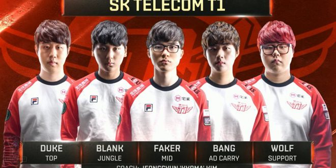

While both 2013 and 2015 had been fairly domninant runs at the Worlds stage 2016 wasn't. While they would sweap aside Royal Never Give Up in 4 games they would go the full 5 against both ROX Tigers and Samsung Galaxy. ultimatly however they would come out on top. 3 worlds titles in 4 years and the first team to go back to back Faker would be viewed as the star of the team and would get the MVP nod. New toplaner duke would play a more tanky role making space for his team. Bengi the jungler that stood by faker every year so far would also split time with subsitute jungler Blank.
The end of this season would see Bengi and Duke depart replaced by Toplaner Huhi and star jungler Peanut.